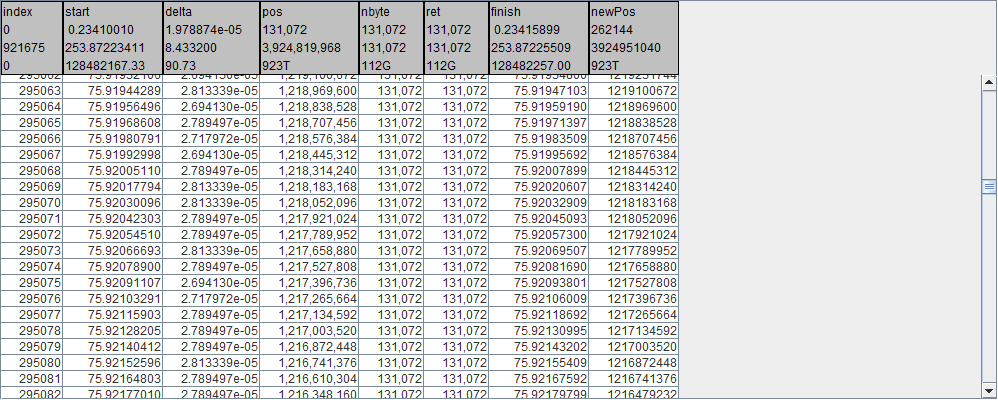
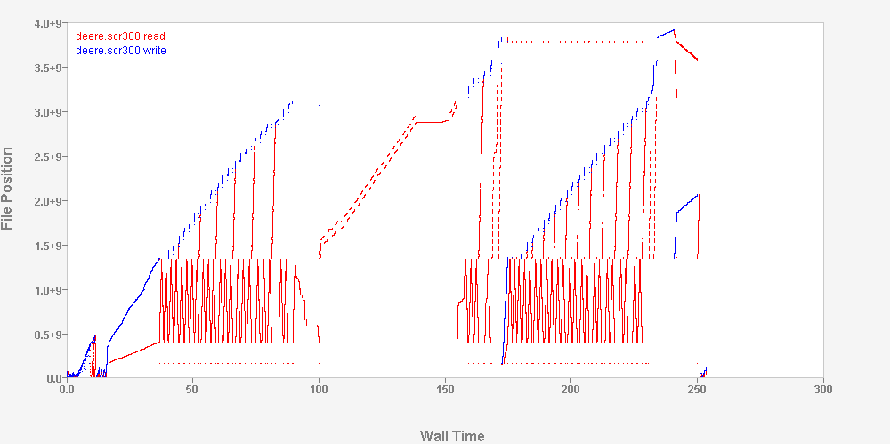

How are Instrumentation Streams Used?
How are Instrumentation Streams used?
File I/O instrumentation for each program is selectable on a per-file basis, based on each file's pathname, by directives in an icf file:
FILES.include={*.dat:/tmp/**}.exclude={/scratch/**}
LAYERS.use={trc,psx}
Resulting instrumentation is recorded in an ilz file.
ilz streams are:
- Stored in a file for post-mortem analysis
- Delivered via socket for run-time analysis
- zlib compressed to minimize sizes
- Multiple ilz streams can be concurrently merged into a single ilz stream
There are 3 levels of file I/O instrumentation
Statistics, for each selected file, are summed into a one line summary for the process
trc.detail=0 produces the following for every program
# date time host user pid program bucket openCount closeCount write(count,bytes,wait) read count,bytes,wait)
03/12/15 12:31:26 shemp bauerj 30168 cc1 program_to_psx 192 192 113 547 0.00 191 1219977 0.00
Statistics, for each selected file, are output to the ilz file.
trc.detail=1 produces the following for every file
iosim.exe.21016.ilz trc program_to_cache /mnt/raid0/bauerj/iosim/20992/merged/kubota.SCR300 58224 7630618624 8.43
iosim.exe.21016.ilz trc size(open,close,max)=0,0,460980224 fsType=EXT2 sector=8192
iosim.exe.21016.ilz trc write 8818 1155792896 1.50
iosim.exe.21016.ilz trc read 49399 6474825728 4.15
iosim.exe.21016.ilz trc ftunc 5 948043776 2.79
Blow-by-blow details of each I/O event, for each selected file, are logged in the ilz file.
trc.detail=2 provides tables such as the following for each posix I/O event for each file, in addition to the per-file summary information from trc.detail=1
POSIX
For example, the details for a POSIX read are: 
Visualized in Pulse 